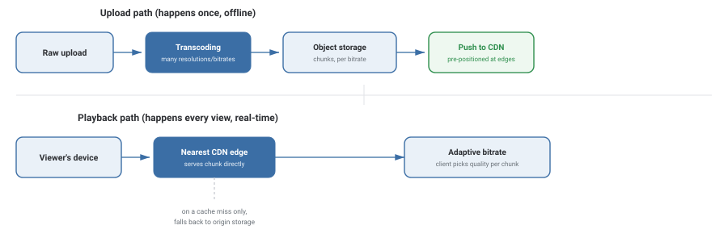

Design Netflix / YouTube
Design a service that stores massive video files and streams them smoothly to hundreds of millions of viewers worldwide, on connections ranging from fiber to spotty mobile data. Unlike the other case studies here, the bottleneck isn't really compute or a database — it's raw bandwidth, and getting bytes physically close to the viewer.
Requirements
- Upload a video; process it into a form ready for streaming.
- Stream video to a viewer, adjusting quality to their current network.
- Resume playback from where a viewer left off.
- Playback must start quickly and not buffer/stutter under normal conditions.
- Must serve viewers globally with low latency, not just near one data center.
- Storage and especially egress bandwidth costs must scale sanely with viewership.
Capacity Estimation
| Assumption | Value |
|---|---|
| Subscribers / active viewers | ~250 million |
| Average daily watch time per viewer | ~2 hours |
| Concurrent streams at peak | ~20 million |
| Average bitrate per stream (mixed quality) | ~3 Mbps |
| Peak egress bandwidth | ~7.5 Tbps |
| New video storage per title (multiple resolutions) | tens of GB |
That peak bandwidth number — terabits per second — is the whole design problem. No single data center's internet connection can serve that; the traffic has to be physically distributed to servers near viewers, everywhere in the world, simultaneously.
High-Level Design

There are two almost entirely independent pipelines. The upload path runs once per video: transcode the raw file into multiple resolutions and bitrates, split each into small chunks, and push those chunks out to CDN edge servers positioned close to viewers worldwide. The playback path runs on every single view: the viewer's client requests chunks from the nearest edge server, adjusting requested quality chunk-by-chunk based on current network conditions.
Deep Dive
Transcoding: one upload, many versions
A single uploaded video is transcoded into a whole matrix of resolution/bitrate combinations (e.g., 240p at low bitrate up through 4K at high bitrate) because viewers have wildly different screens and network speeds, and the right choice can even change mid-playback as someone's WiFi weakens. Each version is also split into short chunks (a few seconds each) rather than stored as one giant file, which is what makes adaptive quality switching and seeking possible.
Adaptive bitrate streaming
The client — not the server — decides which quality version to request for each upcoming chunk, based on its own measurement of recent download speed and buffer health. This pushes the hard, fast-changing decision (what quality can this specific connection sustain, right now) to the edge, where the freshest information about the actual network conditions lives.
Why a CDN, and not just "a bigger data center"
Physics, not just cost, is the real constraint: data takes real time to travel long distances, and no amount of server capacity in one location fixes that for a viewer on the other side of the planet. A CDN solves this by replicating popular content across edge servers physically close to viewers everywhere, so the vast majority of playback requests are served from a nearby edge and never have to reach the origin storage at all.
Trade-offs
- Playback is instant — no processing delay when a viewer hits play.
- Storage cost multiplies by the number of resolution/bitrate versions kept.
- Saves storage — only generate versions actually requested.
- Adds real latency before playback can start; a much worse fit for a "click and watch" experience.
What interviewers are listening for: that you correctly identify bandwidth/CDN distribution — not database scaling — as the central challenge here, and that you understand adaptive bitrate streaming as a client-driven decision, not a server push.
If you're a fresher: explaining why video is chunked and stored at multiple bitrates, and what a CDN is for, covers the essentials.
If you're ~3 years in: you should be able to discuss the storage-vs-latency trade-off of pre-transcoding, and how popularity-based caching decides what content an edge server actually keeps.
Interview Questions
Click a question to reveal the answer.
Why is video split into small chunks instead of stored as one file per resolution?
Chunking enables adaptive bitrate streaming: the client can switch to a different quality version for the very next chunk if network conditions change, without re-downloading anything already played. It also makes seeking fast (jump straight to the chunk containing that timestamp) and lets a CDN cache and serve individual popular chunks independently rather than entire large files.
Who decides which video quality to stream — the client or the server?
The client decides, chunk by chunk, based on its own real-time measurement of download speed and how full its playback buffer is. The server (or CDN edge) simply serves whichever quality version the client requests — this is what "adaptive bitrate streaming" means, and it keeps the decision close to the actual, fast-changing network conditions the client is experiencing.
Why can't this be solved by just building a bigger, more powerful central data center?
Network latency is fundamentally limited by physical distance and the speed of light — no amount of server power fixes the round-trip time for a viewer thousands of kilometers from a single data center. A CDN solves the actual bottleneck by physically distributing copies of content to edge locations near viewers everywhere, so most requests travel a short distance instead of crossing the globe.
How does a CDN edge server decide what content to keep cached locally?
Typically based on popularity and recency, similar to any cache: content that's frequently requested in a given region stays cached at edges serving that region (a new blockbuster release, for instance, gets pre-positioned proactively), while rarely-requested content is evicted and, on a cache miss, fetched from origin storage and cached going forward.